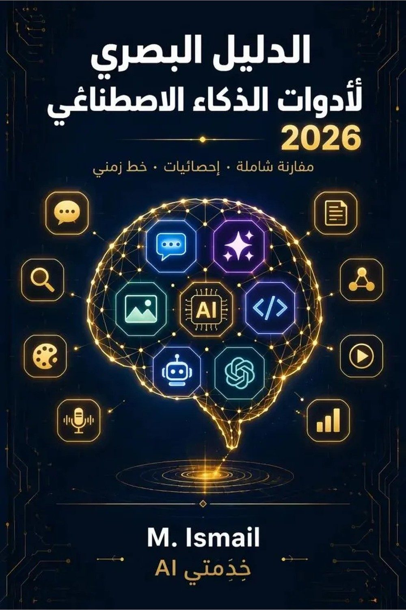

في أواخر 2022، اتفتح باب ما اتقفلش. ChatGPT طلع للناس، وفي شهرين وصل 100 مليون مستخدم — أسرع تطبيق في تاريخ البشرية. ومن ساعتها، العالم اتقسم لـ«قبل AI» و«بعد AI».
المشكلة إن الأدوات كترت جدًا. كل أسبوع أداة جديدة، كل شهر ثورة جديدة، وكل سنة المنظور بيتغير تمامًا. اللي كان معجزة في 2023 بقى عادي في 2024، واللي كان خيالي في 2024 بقى أساسي في 2025. وفي 2026، السوق بقى متشبع ومتنوع — وفيه أداة لكل حاجة، بس مفيش حد بيعرف يميّز بينهم.
لأني أنا نفسي كنت تايه. كمطور ومؤسس منصة «خِدْمَتي AI»، اشتغلت مع عشرات أدوات الذكاء الاصطناعي، وكل مرة كنت بتساءل: «ليه بستخدم ChatGPT مش Gemini؟ وليه Claude أحسن في الكود؟ وليه Midjourney أغلى من DALL·E؟». الأسئلة دي ما كانش ليها إجابة واضحة في مكان واحد.
فقررت أكتب الكتاب اللي كنت بتمناه لو حد كتبهولي: دليل بصري، واضح، بأرقام حقيقية، يقارن الأدوات جنب لبعض، ويساعدك تختار بثقة — مش بس تشوف إشهار وتصدق.
كل إحصائية في هذا الكتاب من تقارير رسمية موثوقة لعام 2025-2026. ما استخدمتش تخمين ولا رقم من غير مصدر. المصادر الأساسية:
كل رقم في الكتاب تقدر ترجع لمصدره الأصلي في قسم «المصادر» في الآخر.
سوق AI بيتغير كل أسبوع. الأرقام في هذا الدليل صحيحة وقت كتابته (أكتوبر 2026)، لكن ممكن تتغير. القاعدة الذهبية: استخدم الدليل كنقطة بداية، واختبر الأداة بنفسك قبل ما تلتزم بيها.
الجزء الأول
فهم الأساسيات
الذكاء الاصطناعي مش سحر. مش عقل إلكتروني بيشتغل لوحده. ده برنامج اتعلم من كميات هائلة من البيانات إنه يكتشف أنماط، ويولّد محتوى جديد شبه اللي اتعلّم منه.
الذكاء الاصطناعي (AI) هو قدرة الكمبيوتر إنه يعمل مهام بتحتاج ذكاء بشري — زي التفكير، الكلام، الكتابة، التعرف على الصور، واتخاذ القرارات. مش إنه يفهم زي الإنسان، لكنه بيقلد نتائج الفهم بدرجة كافية.
| النوع | إيه بيعمل | مثال |
|---|---|---|
| AI التقليدي | يحلل ويصنّف بيانات موجودة | فلترة الإيميل، التعرف على الوجوه |
| Generative AI | يولّد محتوى جديد (نص، صور، صوت) | ChatGPT، Midjourney، Suno |
الثورة الحقيقية حصلت لما الذكاء الاصطناعي بقى «مولّد» — يعني مش بس بيقولك «ده إيميل مزعج»، ده بيكتبلك إيميل كامل، أو بيرسمك صورة، أو بيشتغل أغنية.
السر في حاجة اسمها LLM (Large Language Model — نموذج لغوي كبير). فكر فيها كمكتبة عملاقة فيها مليارات الجمل، والـAI اتعلم منها إزاي الكلمات بتيجي بعد بعضها.
الـAI ما بيفهمش زي ما إنت بتفهم. هو بيتوقع الكلمة اللي بعدها بناءً على اللي اتعلّمه. ده يخليه قوي جدًا، بس يخليه كمان بيغلط أحيانًا (Hallucination — هلوسة) لما متأكدش.
| المصطلح | المعنى |
|---|---|
| Prompt | الطلب أو السؤال اللي بتكتبه للـAI |
| Token | وحدة قياس النص (≈ كلمة أو جزء كلمة) |
| Context Window | كم نص الـAI يقدر يتذكره في المحادثة |
| Fine-tuning | تدريب النموذج على بيانات محددة |
| Hallucination | لما الـAI بيخترع معلومات غلط بثقة |
| Open Source | النموذج متاح للتعديل والاستخدام الحر |
| API | واجهة برمجية لربط AI بتطبيقك |
ثلاث أسباب اجتمعت:
الـTransformer هو البنية اللي اكتشفها Google في 2017، وهي اللي خلّت ChatGPT وكل الأدوات الحالية ممكنة. من غيرها، مكنش في ثورة.
الذكاء الاصطناعي أداة. زي القلم، زي السيارة، زي الكمبيوتر. مش هيغنيك، لكنه بيضاعف قدرتك. واللي هيتعلم يستخدمه صح، هيبقى له أفضلية ضخمة على اللي ما يعرفش.
في الفصول الجاية، هنشوف الأدوات دي بالتفصيل — إيه اللي ممتاز، إيه اللي ضعيف، وإزاي تختار المناسبة ليك. لكن قبل ما ندخل في الأدوات، خلينا نشوف المشهد الحالي: إيه اللي بيحصل في السوق في 2026؟
↓ الفصل التاني: المشهد الحالي 2026
الكتاب الكامل ٦٢ صفحة — باقي ٩ فصول + ٤ إنفوجرافيك + دليل اختيار الأداة المناسبة ليك + خط زمني لثورة AI.
🛒 اطلب نسختك بـ75جالنسخة على Google Drive مدى الحياة · دفع إنستاباي/فودافون كاش